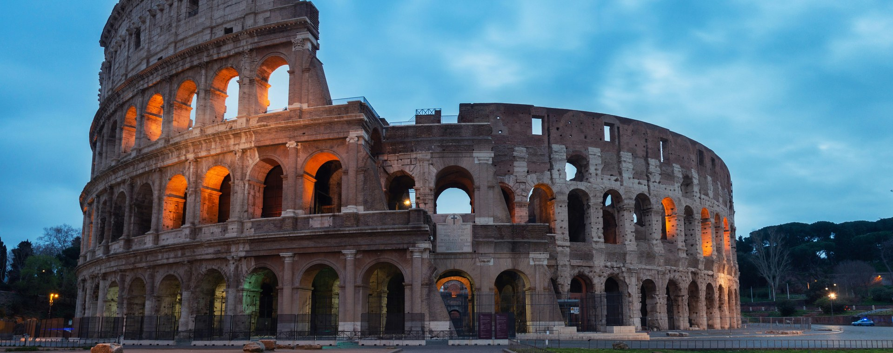
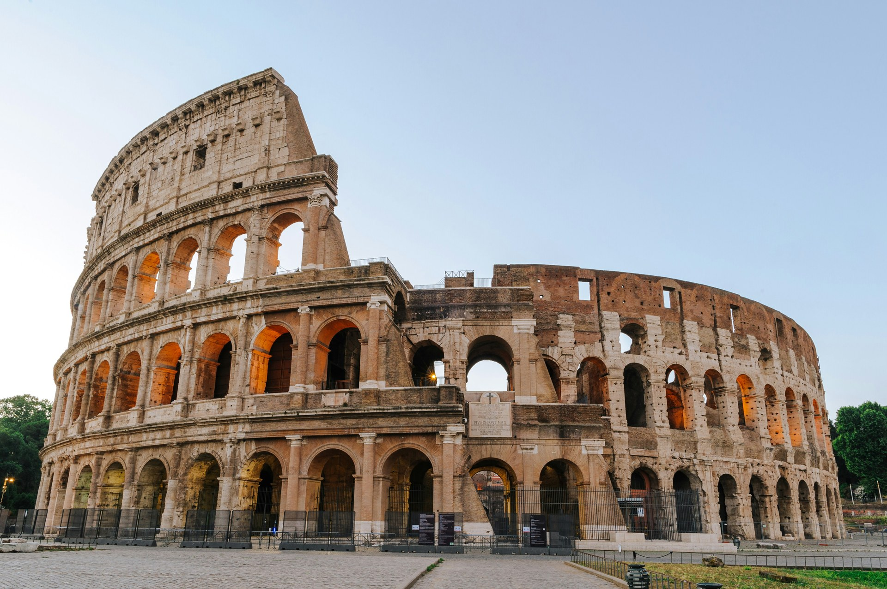
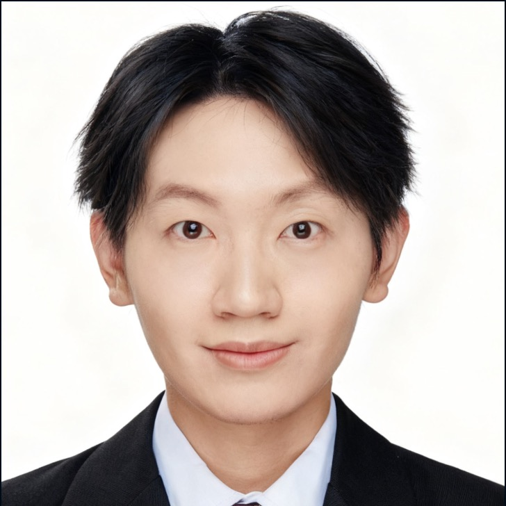
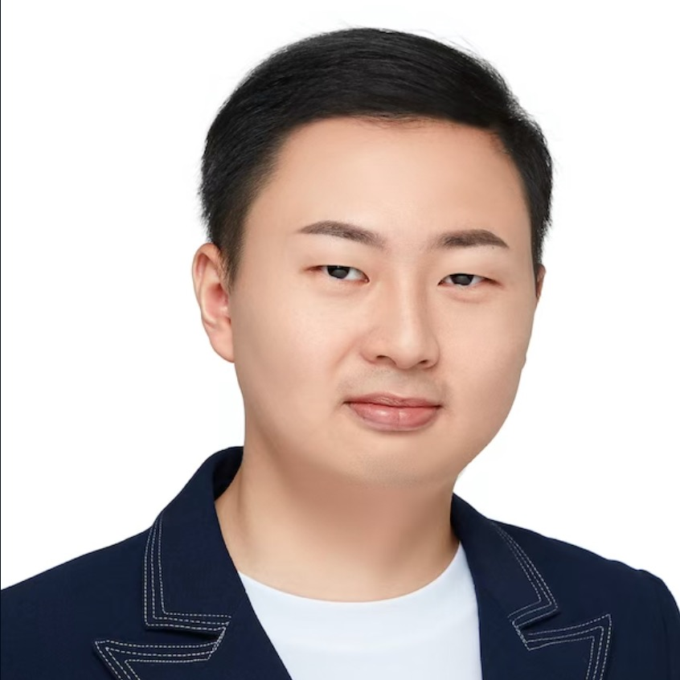
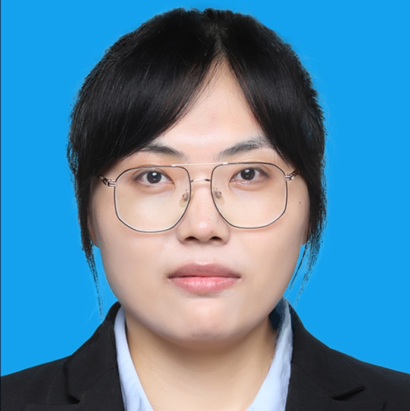
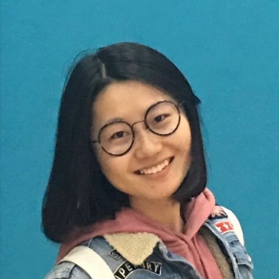

Fundamental Challenges and Real-World Applications
Submit Your Paper →Social simulation plays an important role in domains where human studies face practical constraints, such as sociology, psychology, medicine, and education. Conventional social simulations often relied on rule-based, statistical, or mechanistic models with predefined assumptions, which can oversimplify the complexity, diversity, and context dependence of real-world human behavior.
Recent advances in Large Language Models (LLMs) offer a promising opportunity by enabling agents to interpret contextual information, perform flexible reasoning, and adapt their behaviors to evolving environments, thereby opening new frontiers for modeling human behavior, social interactions, and collective dynamics in support of controlled analysis, counterfactual reasoning, and decision support.
Despite these opportunities, developing LLM-agent-based social simulations also raises significant challenges — including how to model personas and domain knowledge; how to evaluate and analyze simulated behaviors; how to mitigate risks and ensure safety, ethics, and accountability, especially in error-sensitive domains; and how to build scalable infrastructure for large-scale and long-horizon simulations.
Themed "Fundamental Challenges and Real-World Applications", the second LASS workshop aims to bring together researchers and practitioners from diverse disciplines to explore how LLM agents can be more faithfully modeled, rigorously evaluated, safely governed, and effectively applied to address real-world problems in vertical domains — with careful consideration of their unique requirements, challenges, and practical limitations, thereby promoting human well-being and broader societal benefit.
Building on the success of LASS 2025 (CIKM 2025, Seoul) — which attracted around 25 participants, received 15 valid submissions (each with 2–3 reviews), accepted 8 papers, presented 3 LASS Outstanding Paper Awards, and recommended 3 papers for fast-track consideration to JCST — this second edition will further emphasize real-world vertical-domain applications, with stronger attention to expert knowledge, domain-specific safety and ethical requirements, and pathways toward responsible real-world deployment.
All deadlines are 23:59 Anywhere on Earth (AoE). The timeline is preliminary and may be adjusted to align with CIKM 2026 Workshop Chairs' requirements.
By fostering dialogue among AI, NLP, HCI, and a broad range of vertical domains, LASS aims to advance LLM-agent-based social simulations that are technically faithful, safe, ethical, and responsive to the unique requirements of vertical domains. We welcome original submissions that contribute to one or more of the following thematic axes:
Half-day workshop · November 8, 2026 · Rome, Italy. The schedule is preliminary and subject to adjustment.
| 08:30 – 08:40 |
Opening Remarks
Workshop Co-Chairs
|
| 08:40 – 09:10 |
Keynote Talk #1
30-min talk + Q&A · Speaker TBD
|
| 09:10 – 10:20 |
Paper Session #1
Oral presentations + moderated Q&A
|
| 10:20 – 10:30 |
Coffee Break
|
| 10:30 – 11:00 |
Keynote Talk #2
30-min talk + Q&A · Speaker TBD
|
| 11:00 – 12:20 |
Paper Session #2
Oral presentations + moderated Q&A
|
| 12:20 – 12:30 |
Awards & Closing Remarks
Best LASS Paper Award ceremony
|

HG
LP
SG
AZEach submission is assigned to at least three PC members without conflicts of interest, evaluated based on relevance, novelty, technical quality, and clarity. Additional reviewers may be invited according to the number of submissions.
The 1st Workshop on LLM Agents for Social Simulation was held at CIKM 2025, Seoul, South Korea. 8 papers were accepted from 15 submissions, including 3 LASS Outstanding Paper Awards.
View LASS 2025 Website →